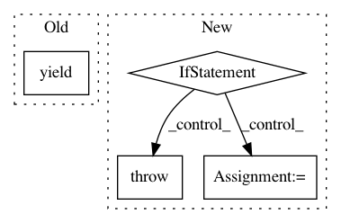

59a4736028fea991396643e361d0488c7c96736d,nilmtk/elecmeter.py,ElecMeter,power_series,#ElecMeter#,297
Before Change
series = chunk.icol(0).dropna()
series.timeframe = getattr(chunk, "timeframe", None)
series.look_ahead = getattr(chunk, "look_ahead", None)
yield series
def dry_run_metadata(self):
return self.metadata
After Change
if kwargs.has_key("cols"):
raise ValueError("Cannot specify `load_all_power_columns` and"
" `cols` together.")
if kwargs.has_key("cols") and measurement_ac_type_prefs:
raise ValueError("Cannot specify `cols` and"
" `measurement_ac_type_prefs` together.")
// Select power column:
if load_all_power_columns:
kwargs["cols"] = [("power", ac_type) for ac_type in AC_TYPES]
elif measurement_ac_type_prefs:
best_ac_type = select_best_ac_type(self.available_power_ac_types(),
measurement_ac_type_prefs)
kwargs["cols"] = [("power", best_ac_type)]
// Get source node
last_node = self.get_source_node(**kwargs)
generator = last_node.generator
// Connect together all preprocessing nodes
for node in preprocessing:
node.upstream = last_node
last_node = node
generator = last_node.process()
// Pull data through preprocessing pipeline
for chunk in generator:
if len(chunk.columns) == 1:
chunk_to_yield = chunk.icol(0).dropna()
chunk_to_yield.timeframe = getattr(chunk, "timeframe", None)
chunk_to_yield.look_ahead = getattr(chunk, "look_ahead", None)
else:
chunk_to_yield = chunk
yield chunk_to_yield
def dry_run_metadata(self):
return self.metadata
In pattern: SUPERPATTERN
Frequency: 3
Non-data size: 4
Instances
Project Name: nilmtk/nilmtk
Commit Name: 59a4736028fea991396643e361d0488c7c96736d
Time: 2014-12-02
Author: jack-list@xlk.org.uk
File Name: nilmtk/elecmeter.py
Class Name: ElecMeter
Method Name: power_series
Project Name: nicodv/kmodes
Commit Name: 2bc7fcee8799b6cb67f1f88eee50b5a033572359
Time: 2019-06-05
Author: nico.devos@auto-grid.com
File Name: kmodes/tests/test_common.py
Class Name:
Method Name: test_non_meta_estimators
Project Name: ellisdg/3DUnetCNN
Commit Name: 7193e19838da4c566c9724ded7a8c37ed7f4fc68
Time: 2017-04-03
Author: david.ellis@unmc.edu
File Name: DataGenerator.py
Class Name:
Method Name: data_generator